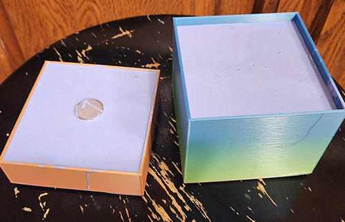
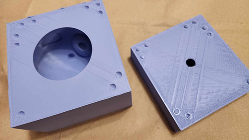

I had some issues with my printer not sticking when printing. No idea what happened, but all of a sudden I had an owl graveyard of 3D prints.
I switched my bed from the metal bed it came with to a glass bed. I leveled the bed again and set the Z-offset
based on the new bed. However, when it came time to print, the Z wasn’t going to the correct spot. It was
staying well above the bed and the prints were failing right from the start.
I was never able to get this corrected, however I found a work around, which was to start the print, then
immediately pause my print and adjust the Z-axis, then restart. I might have overcompensated and put the
Z-offset to -5. Normally, it was at -2.5, but it does make sense that I needed to double that setting since
I was starting at -2.5mm and it had no effect on the placement.
I printed my mold pieces, having my split line at the base of the owl. I created a box for each half of my owl mold to fit into.
After printing the mold (for the mold) for the pour spout into the container box and it immediately got stuck.
I couldn’t get it out. However, when trying to decide how much silicone I would need, I filled up my 3D boxes
with water. The pieces floated to the top and the “stuck” piece floated up to the top!
I ended up needing just under 4 cups of silicone, so I used the entire mixture for making my molds.
When it came to creating my silicone, for some reason I remember hearing “silicone doesn’t stick to anything but itself”. So, I used a glass measuring cup from my kitchen to save time. That didn’t work out so well, and I ruined a great glass measuring cup! Kids, don't do this at home!!
I poured my silicone and let it cure. I wasn’t prepared for how difficult it would be to remove the silicone mold from the container.
Because the silicone was so thick, I wasn’t able to get the mold out of the container. I used some pliers and
snipped at the box until I was able to remove the silicone out of the container.
This was the aftermath of getting the molds out of the boxes!
Now I was left with my beautiful silicone molds! They are surprisingly heavy!
For the plaster, I used plastic disposable cups to stir the plaster. 3 parts plaster to 1 part water! And poured the plaster into the 2 part mold.
I found some cheap MDF 5x5” ⅛” thick boards at the craft store to use for strength on each end of the molds.
After pouring the plaster into the mold and using the boards on each side, I secured the mold together with
about 10 rubber bands! I wanted to make sure the seal was tight.
After an hour, I returned to my mold to remove the silicone casing. The top came off easily and I was left with a “handle” of sorts to pull out the owl. Then was able to break off that cone after getting the owl out of the mold.
I call this "birthing an owl".
I was left with a beautiful owl! There were more air bubbles in the owl than I would like, but I was able to
replicate my owl. I only ended up with 3 castings since I ran out of plaster for a 4th owl.
My dad - For helping me to get the owls out of the molds!